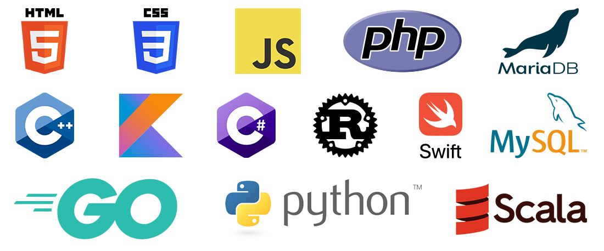

Kompilierte vs. Interpretierte Sprachen – Grundlagen und Unterschiede

In der Softwareentwicklung unterscheidet man häufig zwischen kompilierten und interpretieren Programmiersprachen. Dieser Unterschied wirkt sich spürbar auf den Entwicklungsprozess, die Ausführungsleistung und die Flexibilität von Anwendungen aus. Obwohl die Grenzen zwischen beiden Ansätzen mittlerweile zunehmend verschwimmen, lohnt es sich, die klassischen Prinzipien und Merkmale genauer unter die Lupe zu nehmen, um zu verstehen, wie Code „vom Menschen zur Maschine“ gelangt.
1. Was bedeutet „kompiliert“?
Spricht man von einer kompilierten Sprache, dann meint man in der Regel, dass der Quellcode zunächst durch einen Compiler in eine direkt ausführbare Form übersetzt wird. Dabei kann es sich um reinen Maschinencode handeln, den der Prozessor ohne weitere Zwischenschicht ausführen kann, oder um sogenannte Bytecode-Formate, die von einer Laufzeitumgebung interpretiert werden (z. B. bei Java oder C#). Im engeren Sinne gilt aber vor allem die Übersetzung in Maschinencode (z. B. bei C oder C++) als das klassische Kompilieren.
Die Kompilierung läuft oft in mehreren Schritten ab:
- Lexikalische Analyse (Tokenizing): Der Code wird in kleinere Einheiten („Tokens“) zerlegt, etwa Schlüsselwörter, Symbole und Identifier.
- Syntaktische Analyse (Parsing): Aus den Tokens wird eine Struktur (z. B. ein abstrakter Syntaxbaum) erstellt, die den Programmaufbau abbildet.
- Semantische Analyse: Der Compiler prüft, ob die Anweisungen inhaltlich (semantisch) korrekt sind, also ob z. B. die verwendeten Datentypen stimmen oder Funktionen tatsächlich existieren.
- Optimierung: Während dieser Phase kann der Compiler den Code hinsichtlich Geschwindigkeit und Speicherverbrauch verbessern, etwa durch Entfernen redundanter Teile oder Inlining von Funktionen.
- Code-Generierung: Schließlich wird aus dem optimierten Zwischencode (Intermediate Representation) eigentlicher Maschinencode erzeugt, den die CPU direkt ausführen kann.
Das Ergebnis ist häufig eine executable (z. B. eine „.exe“-Datei unter Windows) oder ein direkt ausführbares Binary unter Linux. Damit ist es möglich, das Programm unabhängig vom ursprünglichen Quellcode zu starten – ein Vorteil, der insbesondere im kommerziellen Bereich geschätzt wird.
2. Vorteile kompilierten Codes
- Hohe Ausführungsgeschwindigkeit: Da die CPU den Code direkt ausführen kann, entfallen zur Laufzeit viele Interpretationsschritte. Das führt in der Regel zu einer guten Performance.
- Schneller Programmstart: Ein kompiliertes Programm braucht (nach dem Laden ins Arbeitsspeicher) keine aufwändige Übersetzungsphase, bevor es loslegt.
- Schutz des Quellcodes: In der Praxis ist es schwieriger, aus einem reinen Maschinencode den ursprünglichen Programmcode 1:1 zu rekonstruieren (obwohl Reverse Engineering natürlich möglich bleibt).
- Optimierungsspielraum: Moderne Compiler sind sehr leistungsfähig im Erkennen von Optimierungspotenzial, was zu sehr effizienten Binärdateien führen kann.
3. Was bedeutet „interpretiert“?
Bei interpretieren Sprachen wird der Quellcode zur Laufzeit „Zeile für Zeile“ oder „Block für Block“ von einem Interpreter eingelesen und ausgeführt. Typische Beispiele dafür sind Python, Ruby oder JavaScript (wenn man es im Browser ausführt).
Anstatt alle Codezeilen im Voraus zu übersetzen, arbeitet der Interpreter quasi on the fly: Er liest eine Anweisung, überprüft deren Syntax und Bedeutung und führt sie dann aus. Damit entfällt ein separater Kompilierungsschritt, was beim Entwickeln sehr praktisch sein kann, da man Änderungen sofort im laufenden Code testen kann.
Die Java Virtual Machine (JVM) oder das .NET Framework liegen in einer Grauzone: Hier wird der Code zuerst in Bytecode kompiliert und dann zur Laufzeit (teils mittels JIT-Compiler) ausgeführt. Man spricht in solchen Fällen oft von „hybriden“ Modellen, da sie Elemente beider Welten vereinen.
4. Vorteile interpretierter Sprachen
- Schnellere Entwicklungszyklen: Man speichert die Datei, führt sie aus, und sieht das Ergebnis sofort – ohne explizite Kompilierung.
- Portabilität: Oft reicht es, dass auf dem Zielsystem ein Interpreter (oder eine Laufzeitumgebung) vorhanden ist, um das Programm in unveränderter Form zu starten.
- Flexibilität und Dynamik: Interpretierte Sprachen ermöglichen einfache Metaprogrammierung, dynamische Typisierung oder spätes Binden von Funktionen. Das macht sie für bestimmte Anwendungsfälle, etwa in der Webentwicklung oder beim Skripten, sehr beliebt.
- Fehlerbehandlung zur Laufzeit: Da der Code erst während der Ausführung interpretiert wird, kann das System auf bestimmte Fehler dynamisch reagieren – z. B. neue Funktionen nachladen.
5. JIT-Compilation – die Zwischenwelt
In vielen modernen Laufzeitumgebungen setzt sich zunehmend das Konzept der Just-in-Time-Kompilierung (JIT) durch. Dabei wird der Code, der eigentlich interpretiert werden sollte (z. B. Bytecode), ganz oder teilweise in Maschinencode übersetzt, während das Programm läuft. Häufige oder besonders zeitkritische Codestellen profitieren dann von nahezu compilerähnlicher Geschwindigkeit.
Ein Beispiel dafür ist HotSpot, die Standard-JVM von Oracle: Hier werden Methoden, die sehr häufig aufgerufen werden, aufwändig optimiert und in Maschinencode kompiliert. Im Ergebnis kann Java-Code dadurch in bestimmten Szenarien ähnlich schnell wie kompiliertes C++ laufen. Auch JavaScript-Engines wie V8 (Chrome) nutzen JIT-Techniken, um die Ausführung signifikant zu beschleunigen.
6. Typische Einsatzgebiete
Welche Art von Sprache man wählt, hängt stark von den Zielen und Anforderungen ab:
- Systemnahe Entwicklung und High-Performance: Wenn eine Anwendung sehr performant sein muss (z. B. bei Echtzeitsystemen, Treibern oder Hochfrequenz-Handelssystemen), sind kompiliert Sprachen wie C, C++ oder Rust meistens erste Wahl.
- Schnelles Prototyping und Scripting: Für schnelle Experimente, Automatisierungen oder Webanwendungen sind interpretierte Sprachen wie Python, Ruby oder JavaScript beliebte Optionen. Ihre Flexibilität und umfangreichen Bibliotheken unterstützen rasches Vorankommen.
- Plattformunabhängige Apps: Java und C# (mit .NET) nutzen Bytecode und JIT-Kompilierung. Das erlaubt eine Kombination aus relativ guter Performance und einfacher Portierung auf unterschiedliche Betriebssysteme.
7. Fazit
Die Entscheidung, ob man eine kompilierte oder interpretierte Sprache einsetzt, wird in der Praxis längst nicht mehr so strikt getroffen wie früher. Während kompiliert Sprachen durch optimierte Compiler und direkten Maschinencode meist einen Leistungsvorteil haben, glänzen interpretierte Sprachen durch Entwicklungskomfort, Portabilität und Dynamik. Dank Techniken wie JIT-Compilation und Bytecode sind viele Sprachen heute „hybrid“ und versuchen, das Beste aus beiden Welten zu vereinen.
Für Entwicklerinnen und Entwickler geht es weniger um das „Entweder-oder“, sondern darum, das passende Werkzeug für das jeweilige Projektziel zu wählen. Wer sich in beiden Welten (kompiliert und interpretiert) auskennt, ist klar im Vorteil: Man versteht nicht nur, wie ein Compiler unter der Haube seinen Code optimieren kann, sondern auch, welche Vorzüge eine Interpretationsumgebung bei schnellen Änderungen und Experimenten bietet. Am Ende zählen gut wartbarer Code, zuverlässige Ausführung und ein effizientes Zusammenspiel aller Komponenten – egal, ob der Quellcode vor der Ausführung in Binärdateien verwandelt wird oder er erst zur Laufzeit entschlüsselt wird.